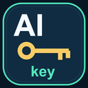

GOOGLE CLOUD · AUTOMATION
AIkey后续流程一键申请
把繁琐配置，交给一次点击。
01 / 连接与结算
先登录 Google Cloud，在目标账号的控制台页面打开本工作台，再点击连接。
保留原版的管理员授权与 JSON 私钥下载。创建的服务账号将拥有 roles/aiplatform.admin；后续云资源使用可能计费。
02 / 一键配置
新建项目 → 绑定结算 → 启用 API → 服务账号与授权 → API 密钥与 JSON 私钥。
等待连接
03 / 配置结果
密钥保存在扩展当前浏览器会话中。清除后仍可在 Google Cloud 管理或撤销密钥；JSON 私钥无法从 Google 再次下载。